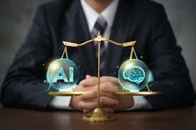
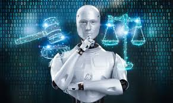
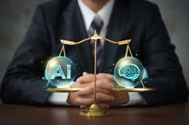
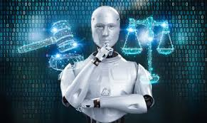

El uso de IA puede generar problemas relacionados con la privacidad, especialmente cuando se recopilan y procesan grandes cantidades de datos. También existe el riesgo de perpetuar sesgos en los algoritmos entrenados con datos parciales.
 



EJEMPLOS
Recopilación masiva de datos:
Los sistemas de IA pueden recopilar y analizar datos personales a gran escala, lo que puede comprometer la privacidad individual si no se manejan adecuadamente.
Vigilancia y control:La IA puede facilitar la creación de sistemas de vigilancia masiva, lo que plantea cuestiones sobre los derechos a la privacidad y el libre albedrío. El uso de tecnologías como el reconocimiento facial en espacios públicos es un ejemplo de cómo se puede erosionar la privacidad.
Explicabilidad de las decisiones:Si una IA toma una decisión errónea o sesgada, ¿quién es el responsable? Este es un dilema ético importante, ya que la falta de claridad en la cadena de responsabilidad puede llevar a problemas legales y morales.